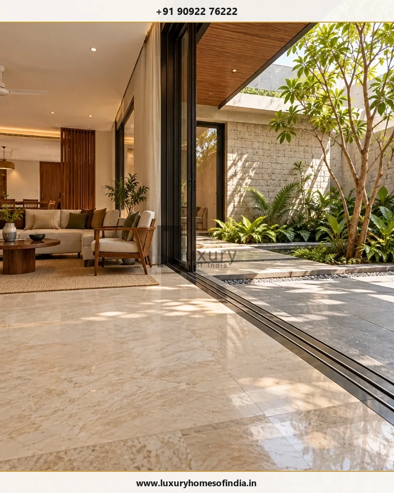
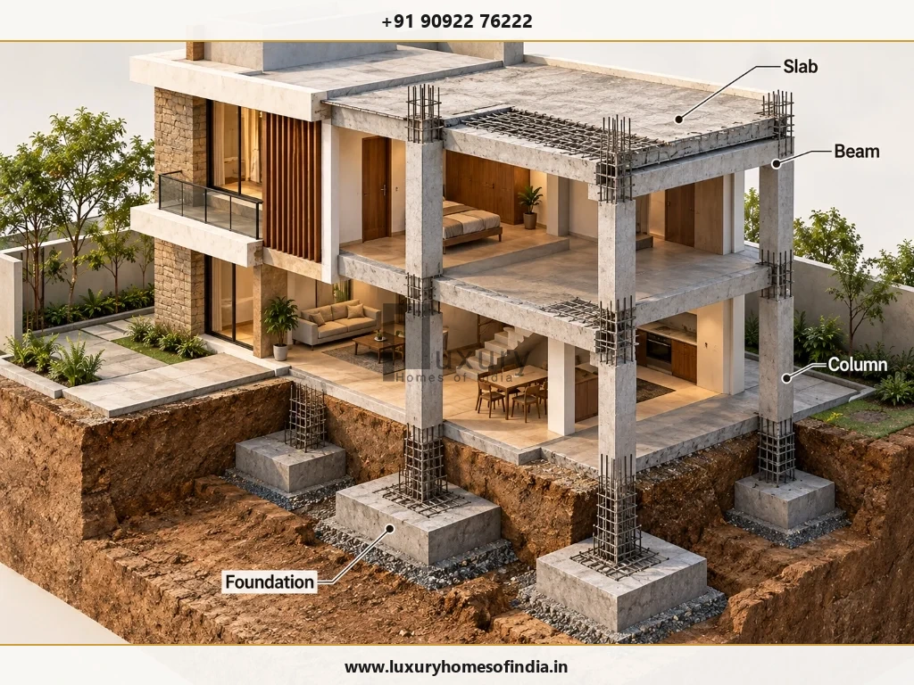
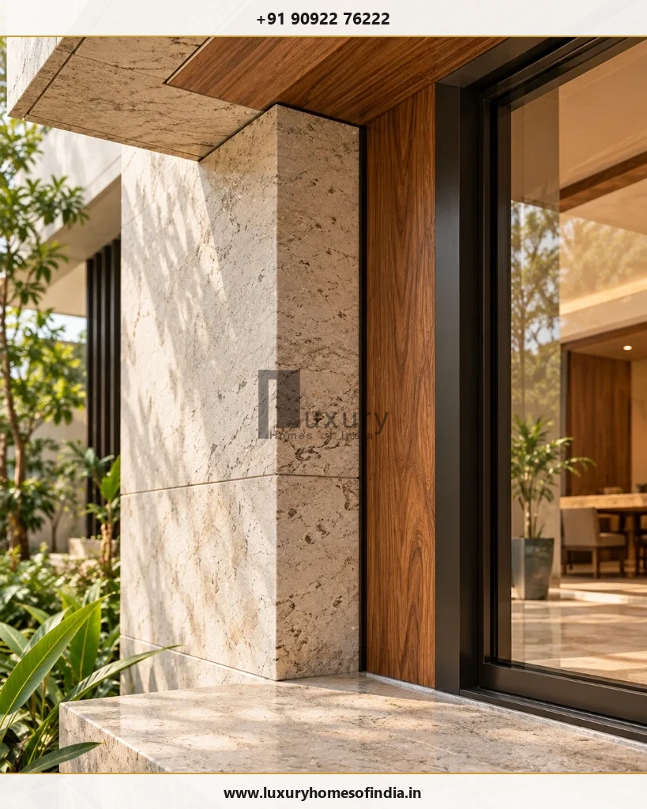

Building a luxury home requires three complementary capabilities: architectural design, structural engineering and construction execution. An architect plans the home's spaces, appearance and functionality; a structural engineer designs the system that supports the building and its loads; and a builder or construction company carries out the agreed work on site.
The right appointment depends on your project, the services you need and how you want responsibilities to be managed. For a bespoke villa, the three disciplines should be coordinated from the design stage—not treated as unrelated tasks.
You can appoint professionals separately or select an integrated design-and-construction provider, provided the scope, qualifications, deliverables and accountability are clear. Before committing, compare drawings, specifications, fees, exclusions, supervision arrangements and handover obligations. This guide explains the difference between a builder, architect and engineer, when to involve each professional, and what homeowners should check before starting a luxury home project in Chennai or elsewhere in India.
Key Takeaways: The Professional Trinity
- The Complementary Trinity: The Architect crafts spatial flow, proportions, aesthetics, and natural light; the Structural Engineer calculates soil loads, seismic stability, and reinforcement; the Builder executes physical construction on site.
- Hiring Sequence: Always engage the Architect first (or an integrated Design-Build firm) to freeze floor plans and zoning, bring in the Structural Engineer during early schematic design, and tender to Builders only after drawings and BOQ are coordinated.
- Never Alter Structure Informally: Relocating columns, punching beam penetrations for AC pipes, or altering slab thicknesses on verbal site instructions severely compromises building safety. Formal structural sign-off is mandatory.
- Separate Appointments vs Integrated Turnkey: Separate hiring gives independent checks and balances but demands owner coordination. Integrated design-and-build (such as LHI's comprehensive model) consolidates single-point accountability from concept to handover.
- Chennai Coastal Context: High coastal humidity, water tables, and monsoon rainfall demand specialized foundation engineering (pile/raft) and climate-responsive architectural shading.
1. What Does a Builder Do in House Construction?
A builder or construction company executes the work defined in the construction agreement. Depending on the contract, the scope may include civil works, material procurement, labour coordination, subcontractor management, site supervision, finishing and handover.
The builder's job is to translate coordinated drawings and specifications into completed work while managing the practical demands of the site.
Key responsibilities of a builder
- Construction planning: Sequencing foundation excavation, RCC framing, brick masonry, services installation, plastering, waterproofing, and high-end finishes.
- Labour and material coordination: Sourcing primary steel, cement, aggregates, and skilled trade crews (carpenters, masons, electricians, plumbers).
- Site execution: Coordinating trades and carrying out work strictly in accordance with approved architectural and structural drawings.
- Quality checks: Conducting concrete cube tests, monitoring mortar mix ratios, verifying waterproofing ponding, and rectifying snags.
- Cost and schedule management: Tracking procurement cash flow against agreed milestone payment schedules and managing approved variation orders.
- Project coordination: Raising Request for Information (RFI) site queries and liaising with architects and engineering consultants.
- Handover: Completing contracted deliverables, issuing warranties, and delivering a clean, snag-free home.
The precise responsibilities depend on the construction model. A labour contractor, a materials-and-labour contractor and a turnkey provider may have substantially different obligations.
When should you appoint a builder?
Consider construction expertise while the design is being developed, especially if the home has complex geometry, customised finishes, extensive services or demanding site constraints. Early input can help identify buildability issues and procurement considerations before they become expensive changes.
Before work starts, establish the construction scope, approved drawings, required permissions, responsibilities, payment terms and site programme.
For a luxury villa, evaluate the builder on documentation, execution capability, coordination and quality procedures—not just the initial quotation.
2. What Does an Architect Do?
An architect develops the home's design around the homeowner's needs, the plot, the budget and applicable planning constraints.
Architectural design influences how rooms relate to one another, how people move through the home, how daylight enters the interiors and how the building responds to its surroundings.
Key responsibilities of an architect
- Understanding the homeowner's lifestyle, family dynamics, priorities and design brief.
- Studying the plot, road access, cardinal orientation, solar path, and site topography.
- Developing concepts, spatial floor plans, elevations, cross-sections, and 3D architectural massing.
- Planning room relationships, circulation, acoustic privacy, natural daylighting and cross-ventilation.
- Coordinating façade materials, fenestration, architectural louvers, and interior millwork requirements.
- Collaborating with structural engineers and MEP (mechanical, electrical, plumbing) building-services consultants.
- Helping assess aesthetic and material choices against the homeowner's agreed budget.
- Preparing or coordinating municipal planning permission drawings (GCC / CMDA / DTCP) where included in scope.
- Conducting periodic site reviews to verify that construction adheres to design intent.

Why architectural design matters in a luxury home
Luxury is not simply the presence of expensive finishes. It also comes from proportion, spatial flow, material consistency, privacy and the relationship between indoor and outdoor spaces.
An experienced architect helps develop:
- Double-height living areas: Carefully planned volumetric proportions that feel grand rather than echoing or cold.
- Courtyards & lightwells: Bringing natural daylight, greenery, and water bodies into the core of the floor plan.
- Zoned privacy: Clear separation between formal entertainment spaces, family areas, and secluded private bedroom suites.
- Climate-responsive façades: Shading deep overhangs and louvers that shield against harsh afternoon sun while capturing seasonal breezes.
- Coordinated services: Concealed air-conditioning ducts, cove lighting, and ceiling drops planned seamlessly with MEP lines.
- Indoor-outdoor transitions: Floor finishes extending flush into landscaped verandahs and private pool decks.
In Chennai, the design should respond to local heat, humidity, rainfall, orientation and maintenance needs rather than relying on appearance alone.
An architect's precise scope varies by appointment. Concept design, detailed drawings, authority submissions, tender support and site visits should be explicitly included or excluded in the agreement.
3. What Does a Structural Engineer Do?
A structural engineer develops or evaluates the building's load-bearing system to meet the applicable strength, stability, serviceability and safety requirements.
The architect and structural engineer solve different but interconnected problems: one develops the architectural arrangement; the other determines how the building can be supported through an appropriate structural system.
Key responsibilities of a structural engineer
- Foundation design: Analyzing soil borehole test reports to specify safe isolated footings, combined mats, or pile foundations.
- Structural analysis and design: Computing load paths across reinforced concrete (RCC) footings, plinth beams, columns, transfer girders, and slabs.
- Load assessment: Calculating dead loads (building mass), live loads (occupants/furniture), wind forces, and seismic zones (Zone III in Chennai).
- Reinforcement detailing: Preparing bar bending schedules (BBS), rebar diameters, stirrup spacing, and lap length details.
- Technical coordination: Resolving column positions alongside room layouts and concealed service conduits.
- Construction-stage support: Inspecting rebar placement before concrete pours and reviewing site queries.

Why structural engineering matters in a luxury villa
Large column-free spans, expansive floor-to-ceiling glass openings, dramatic cantilevered balconies, floating staircases, and rooftop swimming pools introduce complex structural moments and deflections.
These features must be rigorously modeled using structural analysis software (STAAD.Pro or ETABS) during early design development. They cannot be improvised on site by masons.
The Golden Structural Safety Rule: Never relocate columns, hack into concrete beams for plumbing pipes, alter slab thicknesses, or alter rebar specifications based on verbal site suggestions. Any modification must receive formal review and written sign-off from the responsible registered structural engineer.
4. Builder vs Architect vs Engineer: What Is the Difference?
While all three professionals collaborate toward the same dream home, their legal responsibilities, deliverables, and contributions differ fundamentally:
| Responsibility | Builder / Company | Architect | Structural Engineer |
|---|---|---|---|
| Primary focus | Construction execution & site coordination | Spatial design, aesthetics & functionality | Structural stability, load paths & safety |
| Main objective | Deliver contracted work on time & budget | Develop considered living environments | Design durable load-bearing systems |
| Typical deliverables | Completed physical works, MB books & warranties | Floor plans, elevations, sections & finish schedules | Design calculations, structural drawings & BBS |
| Materials role | Procures, tests & installs materials on site | Specifies finish grades, tiles, paint & millwork | Specifies concrete grades (M25/M30) & rebar (Fe 550D) |
| Site involvement | Daily on-site presence & trade supervision | Periodic design intent review visits | Stage-gate structural inspections (pre-pour) |
| Cost contribution | Submits itemised bids & manages milestone cash flow | Balances design features against budget expectations | Optimizes rebar and concrete consumption |
| Accountability | Workmanship tolerances & contract execution | Design compliance & statutory zoning rules | Structural safety under IS building codes |
| When to involve | During design development & before procurement | At the very beginning of the project brief | Early in schematic design before layouts freeze |
Note: These roles are complementary, not interchangeable. A firm may provide integrated services, but individual qualified professionals must sign off on their respective discipline deliverables.
5. Should You Hire an Architect, Engineer or Builder First?
For a custom home, start by defining your requirements and engaging an architect or an appropriately scoped integrated design-and-construction provider. Bring the structural engineer into the design process early, and involve the construction team soon enough to review practical execution and cost implications.
Define Requirements
Establish preferred rooms, family lifestyle needs, approximate BUA, plot boundaries, and budget parameters.
Architectural Design
Engage the architect to develop layouts, elevations, spatial zoning, cross-sections, and material palettes.
Structural Engineering
Conduct soil testing and coordinate column grids and load paths with the structural engineer before freezing layouts.
MEP Services Coordination
Design electrical conduits, plumbing shafts, air conditioning lines, and automation layouts coordinated with structure.
Define Cost & Scope
Prepare coordinated architectural-structural drawings, technical specifications, and an itemised Bill of Quantities (BOQ).
Appoint Builder
Tender drawings to builders, comparing like-for-like quotes, track records, proposed project engineers, and contracts.
Execute & Inspect
Execute work under structured milestone programmes with stage-gate inspections before concrete pours and concealment.
Handover & Snagging
Complete final snag list, collect warranties, as-built drawings, and operational manuals, and enforce 12-month DLP.
6. Do You Need Three Separate Professionals?
Not necessarily. You can appoint an architect, structural engineer and builder separately, or use a provider offering an integrated design-and-construction service.
The essential distinction is between integrating services and leaving responsibilities undefined.
Eight Questions to Ask Before Choosing an Integrated Provider
- Who prepares and signs off the architectural and structural documents?
- Which licensed professionals are responsible for each technical discipline?
- Which council registrations (Council of Architecture / Structural Engineering license) do they hold?
- Are design revisions, consultant coordination meetings, and site visits included?
- Who reviews proposed site modifications to architectural or structural details?
- Which municipal approvals, utility deposits, and statutory charges are excluded?
- How will technical RFIs, defect snagging lists, and variation orders be documented?
- What independent third-party checks (soil testing, concrete cube testing) are incorporated?
An integrated approach can simplify communication and help coordinate decisions across disciplines. It does not automatically guarantee better workmanship, lower costs or faster delivery. Those outcomes depend on the team, the scope, documentation and project management.
7. How an Integrated Design-and-Construction Approach Can Help
Consider a double-height living room with an expansive 20-foot glass opening in the façade.
The architect envisions an unobstructed garden view. The structural engineer must design a stiff transfer beam to support upper-floor masonry without sagging. The construction team needs coordinated rebar drawings, high-strength concrete mix designs, and specialized scaffolding.
If the opening dimensions change after structural calculations or site formwork is complete, the revision causes structural hacking, cost escalation, and project delay.
The same coordination challenge arises with concealed air-conditioning ducts, recessed ceiling lighting, sunken bathroom drainage, and flush marble-to-deck thresholds.
How Luxury Homes of India Fits Into This Decision
Luxury Homes of India publicly lists architectural design and planning, structural engineering, turnkey villa construction and luxury interior execution among its core services. Its published process describes requirement gathering, design and customisation, followed by structured execution and handover. Explore the official LHI website for the current service overview.
For a homeowner considering an integrated provider, the practical questions are:
- Can the team explain how architectural, structural and services drawings are coordinated in-house?
- What complete documentation set will be issued before ground breaking?
- Who manages daily site queries and approves material changes?
- What milestone inspections, progress reports and handover documents are included?
- How are scope adjustments, additional costs and schedule impacts managed?
Ask for written answers in the proposal. Do not assume that every service or inspection is included simply because a provider describes itself as turnkey.
8. How Much Do Architects, Engineers and Builders Charge?
Fees and construction costs depend on the location, project size, complexity, design scope, material specifications and contractual arrangement. There is no single fee structure that applies to every luxury home in Chennai.
Architectural services may be priced using a fixed fee, percentage of construction cost, or per-square-foot rate. Structural engineering fees depend on analysis complexity, soil conditions, and site visit stages. Builders price the scope defined in their contract quotations.
Compare the full scope, not just the headline figure
| What to Check | Why It Matters |
|---|---|
| Architectural deliverables | Confirms which floor plans, 3D views, working drawings, revision rounds, and interior schedules are included. |
| Structural engineering scope | Clarifies structural analysis, STAAD modeling, rebar detailing, BBS, and site visit milestones. |
| Construction inclusions | Identifies which civil materials, skilled labour trades, scaffolding, and curing water/power are covered. |
| MEP and interiors | Prevents false assumptions regarding HVAC ducting, home automation conduits, and specialty joinery. |
| Approvals and statutory charges | Clarifies who coordinates CMDA/GCC liaison, and which government scrutiny fees are excluded. |
| Taxes and variations | Shows how GST, material price escalation, and owner-requested design variations are billed. |
| Site supervision cadence | Defines whether engineers visit daily, weekly, or only for major slab pours. |
| Payment milestones | Links disbursements strictly to verifiable physical progress with retention money safeguards. |
| Handover and defects | Establishes testing certificates, as-built plans, equipment warranties, and 12-month DLP obligations. |
Important: A lower quotation may cover fewer services, different specifications or more exclusions. Compare like-for-like scopes before deciding. Do not rely on a generic per-square-foot figure alone for a bespoke residence.
9. How to Choose the Right Team for a Luxury Home in Chennai
Choosing the right team involves more than reviewing renderings or comparing prices. Assess the professionals, their process, the documents they provide and how responsibilities are managed.

- Review relevant completed projects: Inspect homes of comparable scale and finish complexity. Speak directly with previous clients about execution discipline and defect responsiveness.
- Verify qualifications and registrations: Check Council of Architecture (CoA) registration for architects and licensed structural engineering credentials.
- Examine drawings and detail rigor: Ask how design details are communicated to craftsmen. Request sample working drawing sets to judge technical thoroughness.
- Understand quality management systems: Check how concrete cube tests, rebar inspections, and waterproofing ponding checks are documented on site.
- Confirm commercial transparency: Review the itemised BOQ, allowable scrap limits, payment milestones, and change-order procedures.
- Establish clear communication channels: Designate a single point of technical escalation to avoid mixed instructions to site masons.
- Clarify post-completion warranty: Ensure a 12-month Defect Liability Period (DLP) and manufacturer warranty transfers are contractually binding.
- Address Chennai's coastal environment: Discuss soil bearing capacity, high water tables, saline air corrosion-resistant rebar coatings, and heavy monsoon waterproofing.
Frequently Asked Questions
Start by defining your requirements and engaging an architect or an appropriately scoped integrated design-and-construction provider. Involve the structural engineer early in design development, and obtain construction input before finalising important scope and cost decisions.
Some construction providers offer design-and-build or turnkey services and coordinate architecture and engineering. Confirm who is responsible for each discipline, what qualifications apply and which deliverables are included in the contract.
An architect can help coordinate spatial planning, proportions, daylight, ventilation, materials, circulation and the relationship between indoor and outdoor spaces. The appropriate professional appointments depend on the project and applicable requirements.
Architectural design and structural engineering address different requirements. The architect develops the building's design, while the structural engineer develops the structural solution. The work must be coordinated so the proposed design can be executed appropriately.
A turnkey provider generally undertakes a defined package of services through an agreed completion or handover stage. An individual contractor may provide labour-only, materials-and-labour or another limited scope. The written contract determines the actual obligations.
LHI's public website lists architectural design and planning, structural engineering, turnkey villa construction and luxury interior execution. Confirm the specific services, deliverables, professional appointments and commercial terms for your project directly with the company.
Changes may be possible, but their feasibility, cost and programme impact depend on the nature of the change and the stage of construction. Structural changes must be reviewed by the responsible structural engineer. Record approved changes and their implications in writing.
Start with plot details, built-up area, architectural requirements, structural considerations, services and finish specifications. Use coordinated design documents and a defined construction scope to develop a meaningful estimate.
Conclusion: Bring Design, Engineering and Construction Together
A successful luxury home brings architectural vision, structural engineering and construction execution into one coordinated process.
The architect develops the living experience. The structural engineer designs the system that supports the building. The builder or construction company executes the agreed work and coordinates site activities within its scope.
For homeowners who prefer a more integrated process, Luxury Homes of India publicly lists architectural design, structural engineering, turnkey villa construction and luxury interior execution among its services. The right next step is to discuss your requirements and confirm which services, documents and responsibilities apply to your project.
Planning a luxury villa in Chennai or Chengalpattu?
Begin with your plot details, preferred spaces, design priorities and approximate budget. Contact Luxury Homes of India to discuss your residential project and clarify the appropriate scope of services.
Luxury Homes of India (LHI)
Website: https://www.luxuryhomesofindia.in/
Phone: +91 90922 76222
Email: info@luxuryhomesofindia.in
Address: #85, 4th Floor, Lotus Tower, Guindy, Chennai – 600032
Written by: Luxury Homes of India Editorial
Reviewed by: LHI Architectural & Structural Engineering Advisory
Disclaimer: This article provides general educational information. Project-specific design, structural engineering, statutory approvals, construction requirements and contractual responsibilities should be confirmed with the appropriate qualified professionals and authorities.